rqog-package for R
compiled at 2017-05-11 16:17:28
Download data from the Quality of Government Institute data
Quotation from Quality of Governance institute website
The QoG Institute was founded in 2004 by Professor Bo Rothstein and Professor Sören Holmberg. It is an independent research institute within the Department of Political Science at the University of Gothenburg. We conduct and promote research on the causes, consequences and nature of Good Governance and the Quality of Government (QoG) - that is, trustworthy, reliable, impartial, uncorrupted and competent government institutions.
The main objective of our research is to address the theoretical and empirical problem of how political institutions of high quality can be created and maintained. A second objective is to study the effects of Quality of Government on a number of policy areas, such as health, the environment, social policy, and poverty. We approach these problems from a variety of different theoretical and methodological angles.
Quality of Government institute provides data in five different data sets, both in cross-sectional and longitudinal versions:
rqog-package provides access to Basic, Standard and OECD datasets through function read_qog(). Standard data has all the same indicators as in Basic data (367 variables) and an additional ~1600 indicators. Both basic and standard datasets have 194 countries. OECD dataset has 1020 indicators from 35 countries. rqog uses longitudinal datasets by default that have time-series of varying duration from majority of the indicators and countries.
Quality of Government Institute provides codebooks for all datasets:
You consult the codebooks for description of the data and indicators.
Examples
Basic Data
Basic data has a limited selection of most common indicators. Below is an example on how to extract data on population and Democracy (Freedom House/Polity) index from BRIC-countries from 1990 to 2010 and to plot it.
library(rqog)
# Download a local coppy of the file
dat <- read_qog(which.data="basic", data.type = "time-series")
# Subset the data
dat2 <- dat[dat$year %in% 1990:2010 & dat$cname %in% c("Russia","China","India","Brazil"),
c("cname","year","fh_ipolity2","wdi_pop")]
# gather to long format
library(tidyr)
dat.l <- gather(dat2, "var", "value", 3:4)
dat.l <- dat.l[!is.na(dat.l$value), ]
# Plot the data
library(ggplot2)
ggplot(dat.l, aes(x=year,y=value,color=cname)) +
geom_point() + geom_line() +
geom_text(data=merge(dat.l,aggregate(year ~ cname, dat.l, max),
by=c("year","cname")),
aes(x=year,y=value,label=cname),
hjust=1,vjust=-1,size=3,alpha=.8) +
facet_wrap(~var, scales="free") +
theme(legend.position="none")
Standard data
Standard data includes roughly 2500 indicators. Below is an example on how to extract data on Environmental Performance Index and Party of Chief Executive: How Long in Office from BRIC-countries and plot it.
library(rqog)
# Download a local coppy of the file
dat <- read_qog("standard", "time-series")
# Subset the data
dat2 <- dat[dat$cname %in% c("Russia","China","India","Brazil") & dat$year %in% 2000:2010, c("cname","year","epi_epi","dpi_hlio")]
# gather to long format
library(tidyr)
dat.l <- gather(dat2, "var", "value", 3:4)
dat.l <- dat.l[!is.na(dat.l$value), ]
# Plot the data
library(ggplot2)
ggplot(dat.l, aes(x=year,y=value,color=cname)) +
geom_point() + geom_line() +
geom_text(data=merge(dat.l,aggregate(year ~ cname, dat.l, max),
by=c("year","cname")),
aes(x=year,y=value,label=cname),
hjust=1,vjust=-1,size=3,alpha=.8) +
facet_wrap(~var, scales="free") +
theme(legend.position="none")
OECD data
OECD data includes 1199 variables, but from a smaller number of wealthier countries of 34. In the example below four indicators:
- Total social expenditure (public)
oecd_socexpnd_t1a - Income inequality: Gini coefficient; level; late 2000s
oecd_incinequal_t1a - Gross national income per capita
oecd_natinccap_t1 - General government debt
oecd_govdebt_t1
We will include all the countries and all the years included in the data.
library(rqog)
# Download a local coppy of the file
dat <- read_qog("oecd", "time-series")
# Subset the data
dat2 <- dat[c("cname","year","oecd_socexpnd_t1a")],
"oecd_incinequal_t1a",
"oecd_natinccap_t1",
"oecd_govdebt_t1")]
# gather to long format
library(tidyr)
dat.l <- gather(dat2, "var", "value", 3:6)
dat.l <- dat.l[!is.na(dat.l$value), ]
library(ggplot2)
# Plot the data
ggplot(dat.l, aes(x=year,y=value,color=cname)) +
geom_point() + geom_line() +
geom_text(data=merge(dat.l,aggregate(year ~ cname, dat.l, max),
by=c("year","cname")),
aes(x=year,y=value,label=cname),
hjust=1,vjust=-1,size=3,alpha=.8) +
facet_wrap(~var, scales="free") +
theme(legend.position="none")sessionInfo()## R version 3.4.0 (2017-04-21)
## Platform: x86_64-pc-linux-gnu (64-bit)
## Running under: Linux Mint 18.1
##
## Matrix products: default
## BLAS: /usr/lib/libblas/libblas.so.3.6.0
## LAPACK: /usr/lib/lapack/liblapack.so.3.6.0
##
## locale:
## [1] LC_CTYPE=fi_FI.UTF-8 LC_NUMERIC=C
## [3] LC_TIME=fi_FI.UTF-8 LC_COLLATE=fi_FI.UTF-8
## [5] LC_MONETARY=fi_FI.UTF-8 LC_MESSAGES=fi_FI.UTF-8
## [7] LC_PAPER=fi_FI.UTF-8 LC_NAME=C
## [9] LC_ADDRESS=C LC_TELEPHONE=C
## [11] LC_MEASUREMENT=fi_FI.UTF-8 LC_IDENTIFICATION=C
##
## attached base packages:
## [1] stats graphics grDevices utils datasets methods base
##
## other attached packages:
## [1] ggplot2_2.2.1 tidyr_0.6.2 rqog_0.2.1
##
## loaded via a namespace (and not attached):
## [1] Rcpp_0.12.10 knitr_1.15.1 magrittr_1.5 munsell_0.4.3
## [5] colorspace_1.3-2 R6_2.2.0 plyr_1.8.4 stringr_1.2.0
## [9] dplyr_0.5.0 tools_3.4.0 grid_3.4.0 gtable_0.2.0
## [13] DBI_0.6-1 htmltools_0.3.6 yaml_2.1.14 lazyeval_0.2.0
## [17] rprojroot_1.2 digest_0.6.12 assertthat_0.2.0 tibble_1.3.0
## [21] evaluate_0.10 rmarkdown_1.5 labeling_0.3 stringi_1.1.5
## [25] compiler_3.4.0 scales_0.4.1 backports_1.0.5